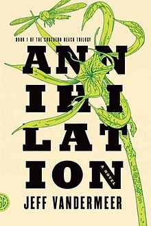

Annihilation - Jeff VanderMeer
This is a seriously creepy sci-fi post apocalypse novel that follows a biologist on expedition into Area X. Her expedition runs into the tower. A mysterious living structure embedded into the ground. Who is producing the writing on the wall? Why does it seem alive?
I am not particularly familiar with Horror. I tend to find the genre hides information, in most cases, seemingly at random. It often is also filled with characters holding the idiot ball. Instead of scary this tends to make the genre irritating. I’m pleased to say Annihilation didn’t do that. The biologist picked up information and shared it with the reader. The biologist was also a biologist (i.e not a complete idiot). There was still a problem, though. The information she picked up didn’t really help her. In this, the novel perfectly captured the feeling of a false explanation.
The general creepy-ness factor of this goes up as the novel progresses. You learn that, unlike most post apocalypse stories, most people aren’t actually aware they’re in a post apocalypse world. A sense of inevitability follows; you know nothing good is going to happen but you’re not going to stop reading. I lent this book to a friend. They read it in a single weekend.
The speed at which I read this possibly caused me to miss a lot of the twists. Every one I came across felt non-obvious and out of the blue. The sinking feeling you get as you experience the horror is truly excellent. As is to be expected, parts of the ending were a little weird. The ending was strange in a different direction to the rest of the novel. Despite this, it was satisfying for several reasons. You arrived at the end not knowing too much so there was a feeling of anti-climax which fit with the feeling generated by the rest of the novel.
“Can you really imagine what it was like in those first moments, peering down into that dark space, and seeing that? Perhaps you can. Perhaps you’re staring at it now”
This is the first novel in a trilogy. Even though I loved the feeling as I read this novel I’m not certain I want to read the second. Mostly, this was due to arriving at the end with the amount of information you did. Not enough to ruin the ending but far too much to see where a sequel would go. The second novel is apparently set in a different part of the Annihilation Universe, which may be little enough of a sequel so as to be readable. Who knows.
I got a physical copy but there is also a kindle version which means you can find a small preview on Amazon